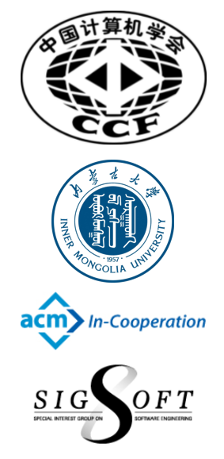

Internetware 2021
呼和浩特,May 12-14,2022
Register
A virtual conference,each session will be held via Zoom| Author | Non-Author | ||
| Non-Student | Student | ACM/CCF Members | |
| 300 | 100 | 50 | 50 |
Register Now!
Sponsors



Welcome to Internetware 2021
Internet provides a global open infrastructure for exchanging and sharing of various resources for the people all over the world. The rapid development and the wide application of Internet make it become a new mainstream platform for software to be used, developed, deployed and executed. With the vision of “Internet as computer”, many application styles such as pervasive computing, grid computing, service computing and cloud computing occur on this open and dynamic environment. In order to support various new application styles and accommodate the fundamental change of the underlying supporting platform, many specific software technologies such as service-oriented architecture are proposed for current practices. However, although these technologies are useful and popular, they are far from systematic and complete because no uniformed software methodology and technology system like the object-oriented one is provided. Conceptually speaking, in order to adapt the software system to such a new environment, its structure model should be autonomous, cooperative, situational, evolvable, emergent, trustworthy, etc. The software entities dispersed on distributed nodes over the Internet, which evolved from objects in object-oriented methodology to software components (component-based software development), now are further turned into self-contained, autonomous and adaptive software services in service-oriented computing of state-of-arts. These software entities are coordinated statically and dynamically in various kinds of interaction styles (passively and actively) such as integration, cooperation, and orchestration to achieve flexible design objectives. So a so-called “software-web” instead of information-web is weaved. This software-web as a whole is able to perceive the changes of open, dynamic, and uncertain environment and respond them in the way of transforming architectures. Furthermore, the flexible design objective of the software-web is reflected by its exhibiting several compatible goal-directed behaviors according to its up-to-date knowledge about the outside environment. A portmanteau term “Internetware” is used to denote the future software-web in open and dynamic environment, which can be defined as follows: an Internetware system is a software system consists of the self-contained, autonomous entities situated in the distributed nodes of Internet and the coordinators connecting these entities statically and dynamically in various kinds of interaction styles (passively and actively). As a whole, an Internetware system is able to perceive the changes of open and dynamic environment such as Internet, respond to the changes in the way of architectural transformation, and exhibit context-aware, adaptive and trustworthy behaviors in the open and dynamic environment in order to meet its flexible design objectives. Internetware challenges many aspects of software technologies, from operating platforms, programming models, to engineering approaches, etc.